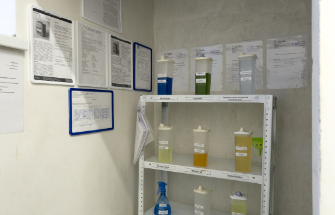
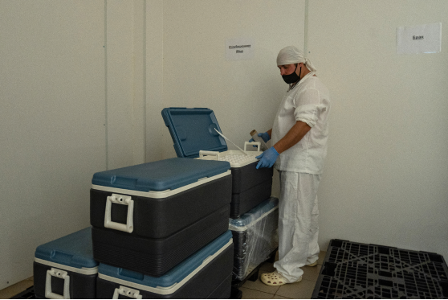
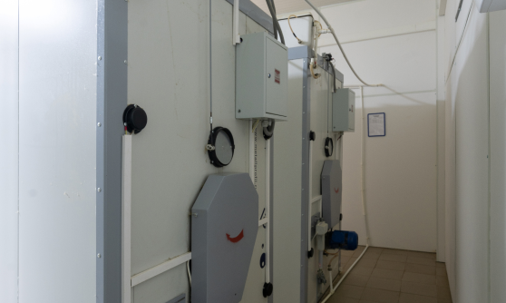
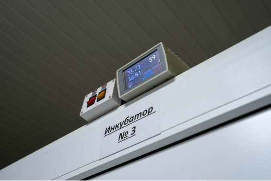
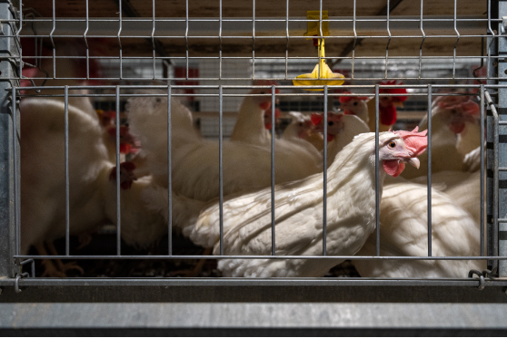

<!--quality control system -->

<section class="section-main quality-control-system">
    <div class="container">
        <div class="section-inner __quality-control-system">
            <div class="main-title-block __common-margin-bottom">
                <h2 class="section-main-title">СИСТЕМА КОНТРОЛЯ КАЧЕСТВА</h2>
            </div>
            <div class="main-subtitle-block __common-margin-bottom">
                <span>Птицефабрика оснащена современным клеточным оборудованием Российского производства
                    (ООО Техна», г.Липецк), включая автоматические системы поения, кормления, помётоудаления и
                    яйцесбора. Проект птичника разработан и реализован таким образом, чтобы полностью исключить
                    контакт производственных помещений с окружающей средой.</span>
            </div>


            <section class="section-content __quality-control-system __section-content-indent">
                <div class="text-block__inner-wrapper __quality-control-system">
                    <div class="text-block-title __quality-control-system">
                        <span>Очистка и<br> дезинфекция</span>
                    </div>
                <div class="text-block __quality-control-system">
                    <p>Наше производство уделяет особое внимание очистке и дезинфекции СПФ-птичника.
                        Дезинфекция представляет собой длительную многоступенчатую процедуру с использованием широкого
                        перечня специальных групп веществ. Оборудование, функционирующее на территории предприятия,
                        проходит техническое обслуживание в момент приготовления комнаты к приему поголовья, а именно
                        после очистки помещения и перед дезинфекцией.
                        Регулярная  очистка и дезинфекция производства и вспомогательных помещений с последующим
                        микробиологическим контролем качества проводится согласно утверждённому графику.

                    </p>

                </div>
                </div>
                <div class="image-block">
                    <picture class="picture image-block__picture">
                        
                    </picture>
                </div>
            </section>
            <section class="section-content __quality-control-system __section-content-indent">
                <div class="text-block__inner-wrapper __quality-control-system">
                    <div class="text-block-title __quality-control-system">
                        <span>Квалифицированные<br> сотрудники и постоянное<br> обучение персонала</span>
                    </div>
                    <div class="text-block __quality-control-system">
                        <p>Сотрудники предприятия имеют высшее биологическое, медицинское или ветеринарное образование.
                            Обслуживающий персонал питомника Подмоклово на постоянной основе проходит специализированное
                            повышение квалификации в данной сфере.
                            В работе используется постоянный учет поступающих данных, эффективно зарекомендовавший
                            себя как способ предотвращения возможных проблем в стаде
                        </p>

                    </div>
                </div>
                <div class="image-block">
                    <picture class="picture image-block__picture">
                        
                    </picture>
                </div>
            </section>
            <section class="section-content __quality-control-system __section-content-indent">
                <div class="text-block__inner-wrapper __quality-control-system">
                    <div class="text-block-title __quality-control-system">
                        <span>Надежная защита от<br> контаминации из внешней среды</span>
                    </div>
                    <div class="text-block __quality-control-system">
                        <p>Питомник “Подмоклово” применяет высокотехнологичные изоляторы с оптимальным количеством
                            птиц в группе. Предприятие использует барьерную систему защиты.
                        </p>
                        <p><strong class="text--strong">Вентиляционная защита:</strong> поступающий в помещение
                            СПФ воздух очищается до мельчайших частиц при
                            помощи специальной приточно-вытяжной вентиляцией. Поступающий воздух очищается от мельчайших
                            частиц фильтрами для взвешенных частиц. Система вентиляции создаёт положительное давление
                            в производственном помещении.</p>
                        <p><strong class="text--strong">Материальная защита:</strong> гигиеническая обработка корма
                            и воды, технического инвентаря,
                            предметов осуществляется до поступления в зону содержания СПФ - кур. Это происходит,
                            через встроенные барьеры. Материальный барьер включает в себя также микробиологический
                            контроль предназначенной для птицы питьевой воды, который осуществляется регулярно согласно
                            утверждённому графику. Для дезинфекции питьевой воды используется ультрафиолетовое
                            облучение, ацидификация, хлорирование или озонирование. Санитарно – гигиеническая обработка
                            кормов проводится с применением технологии термической обработки при высоких температурах,
                            а также ионизирующего излучение и дезинфекции с применением химических средств. Помёт в
                            птичнике хранится не более суток и вывозится с территории птицефабрики для переработки.</p>
                        <p><strong class="text--strong">Защита персонала:</strong> доступ сотрудников в
                            производственное помещения содержания СПФ-птицы
                            строго ограничен. Проход персонала в птичник возможен только через дизбарьер, включая
                            обязательный приём душа и переодевание в рабочую одежду и обувь. Хранение и стирка рабочей
                            одежды осуществляется в специальном помещении в чистой зоне птичника.</p>
                        <p><strong class="text--strong">Барьер для готовой продукции:</strong>
                            готовая продукция проходит дезинфекцию пароформалиновым методом, согласно технологии
                            производства, передача готовой продукции на отгрузгу происходит через
                            дезинфицирующий барьер.
                        </p>

                    </div>
                </div>
                <div class="image-block">
                    <picture class="picture image-block__picture">
                        
                    </picture>
                    <picture class="picture image-block__picture">
                        
                    </picture>
                </div>
            </section>

            <section class="section-content __quality-control-system __section-content-indent">
                <div class="text-block__inner-wrapper __quality-control-system">
                    <div class="text-block-title __quality-control-system">
                        <span>Воспроизводство кур с <br> подтвержденным статусом СПФ</span>
                    </div>
                    <div class="text-block __quality-control-system">
                        <p>Существующее стадо воспроизводит потомство без какого-либо контакта с окружающим миром.
                        </p>


                    </div>
                </div>
                <div class="image-block">
                    <picture class="picture image-block__picture">
                        
                    </picture>

                </div>
            </section>


        </div>
    </div>

</section>
<!--quality control system -->

